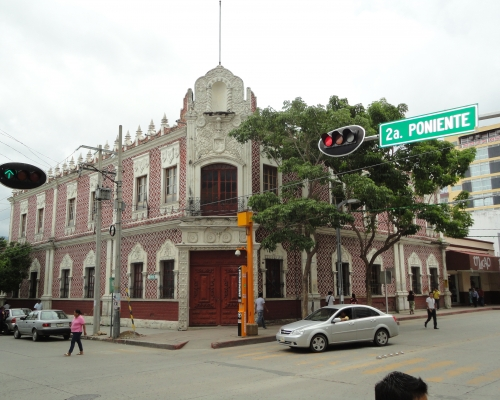

Este museo fue construido entre los años 1941 y 1942, se ubica sobre la avenida central poniente a solo dos cuadras del parque central de la ciudad de Tuxtla Gutiérrez, en él se puede encontrar documentos antiguos de Chiapas y sobre sus principales personajes. También muestra el suceso histórico del traslado de la sede de los poderes del Gobierno de Chiapas de San Cristóbal de Las Casas a Tuxtla Gutiérrez y las causas que lo provocaron . Su sede es una antigua casa en la zona de San Roque, conocida como San Andrés. Se encuentra en uno de los 4 barrios originales de Tuxtla Gutiérrez. El Museo de la Ciudad de Tuxtla Gutiérrez permite conocer la historia y el desarrollo del Estado de Chiapas. Sus salas tienen una temática variada. Una de ellas representa el despacho de Emilio Rabasa, un afamado hombre de letras chiapaneco, en otra se rinde homenaje a Joaquín Miguel Gutiérrez, militar, político y uno de los primeros gobernadores. También hay una muestra de artistas plásticos de la región, otra sobre el fin del Porfiriato (el larguísimo periodo presidencial de Porfirio Díaz), la revolución de Tuxtla, la sociedad de los zoques (una comunidad indígena), por citar algunos aspectos.
Dirección: Av. Central 288 Centro. CP 29000, Tuxtla Gutiérrez, Chiapas.
Del parque central, tomar la avenida central poniente, hasta la esquina 2ª Pte. Nte.
Este Museo cuenta con un aforo, plazas y escenario para 150 personas, además cuenta con: galería, 3 camerinos principales, 2 vestidores múltiples, cafetería, y espacios para ensayos de grupos de danza y teatro

posicione el mouse sobre las imágenes